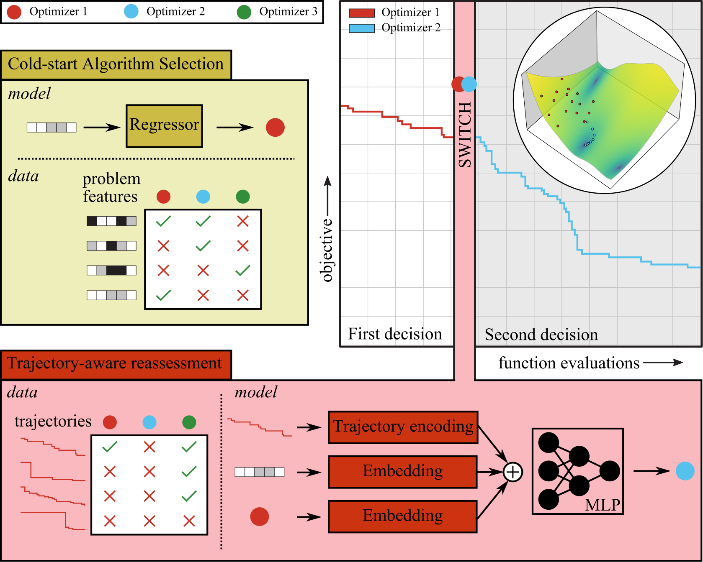

Optimization plays a central role in data-driven design. However, choosing an appropriate optimization algorithm for a specific task is often challenging, as it depends on the structure of the optimization problem and practical limitations such as the computational budget. To tackle this challenge, the field has seen a shift from manually designing optimizers toward using machine learning methods that attempt to learn the optimization process itself. Despite significant progress, existing approaches frequently exhibit limited generalization to new distributions and typically require retraining to transfer their knowledge. 
We introduce a new approach called "Learning to Choose Optimizers" (L2CO). In our approach, a meta-learner first selects an optimizer before any function evaluations—based solely on available problem characteristics—and then reassesses that choice using a unified model that jointly encodes problem context, optimizer identity, and the observed optimization trajectory. By restricting selection to well-established algorithms, L2CO avoids the convergence issues of learned update rules while retaining the adaptability of dynamic selection.
In this work, we train our model offline on a collection of benchmark functions, employing a mixture of gradient-based, population-based, and probabilistic model-based optimizers. We demonstrate the effectiveness of our method by comparing its performance to classical optimizers on standard benchmark problems and a neural net classification task. The empirical results indicate that L2CO is a promising tool with improved generalization capabilities.
van der Schelling, M., Toshniwal, D., & Bessa, M. A. Learning to Choose Optimizers. IEEE Congress on Evolutionary Computation (CEC), 2026.